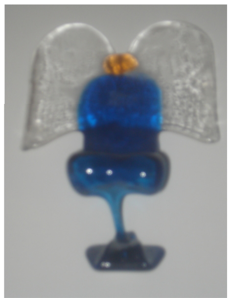
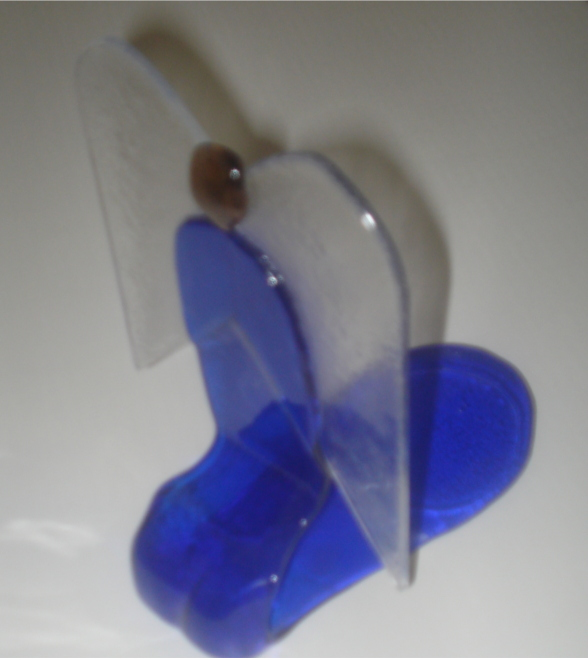

Uunista tuli
|

Piti tulla
|
Anteeksi epäselvä kuva. Asia kuitenkin näkyy.
Enkelin helman piti slumppautua niin ettse asetuu polvistuneeseen asentoon.
Tapaus on törkeä ylipaistaminen.
Helma on ensin taipunut alas, mutta lasi on ollut niin pehmeää
että on valunnut kapeana norona ja tehnyt lammikon uunilevulle.